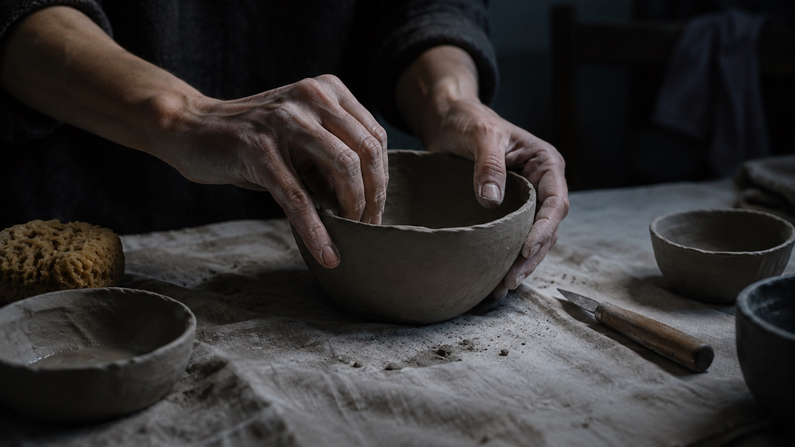
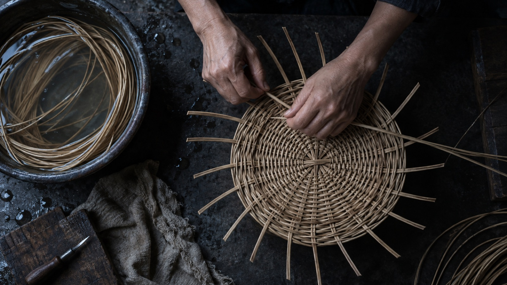
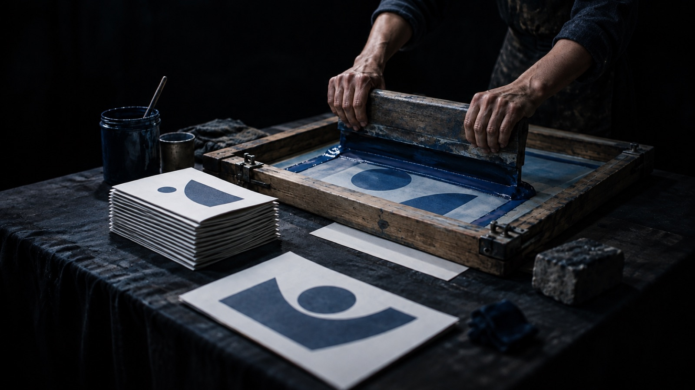

課程總長4 小時 20 分探索課程
都含免費試看章節，
-
-
課程總長3 小時 05 分
-
 課程總長5 小時 40 分
課程總長5 小時 40 分
-
課程總長3 小時 50 分
-
課程總長2 小時 50 分
-
課程總長2 小時 15 分
-

課程總長2 小時 00 分 -

課程總長4 小時 05 分
設計稿狀態示意
這一頁的其他狀態
篩選沒有結果時
選了「蠟燭香氛＋進階＋NT$ 3,000 以上」：工具列上方列出已選條件（可個別移除），結果數變成 0，課程網格換成空狀態。
這個條件下目前沒有課程，試著放寬難度或價格範圍。